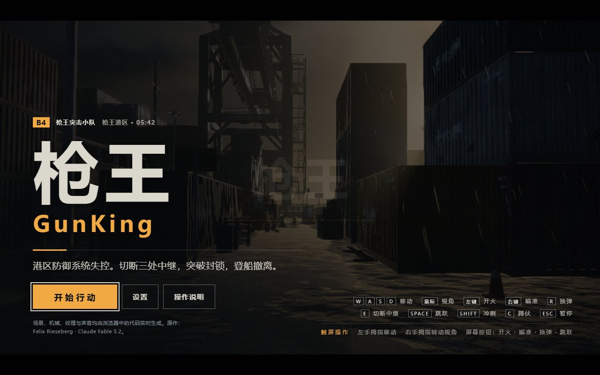
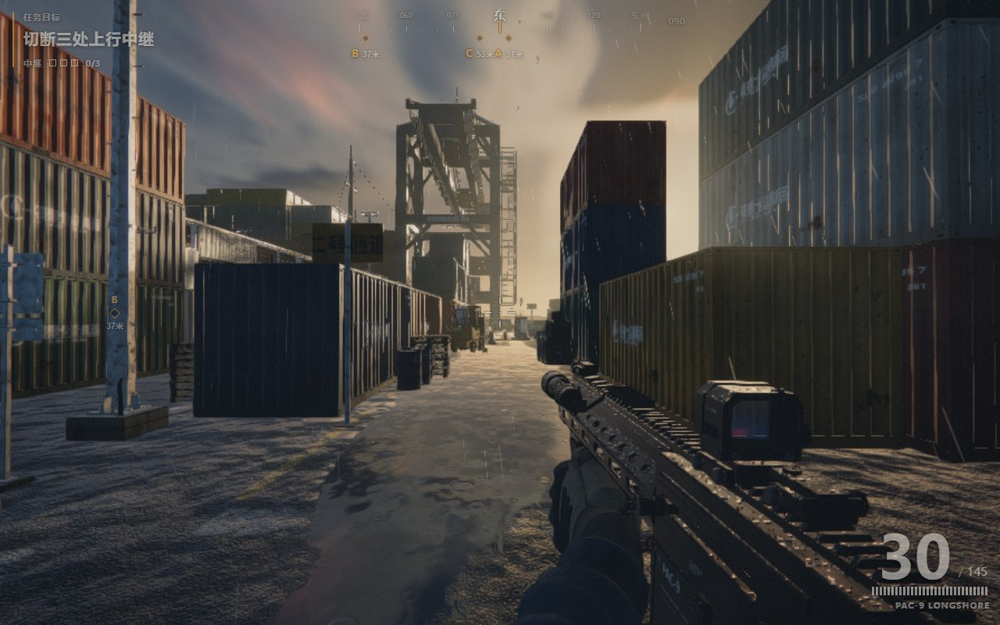

枪王 GunKing · 港区突围
溯源、还原与技术解析
固定 Saltline 上游程序，剔除流传版的旧改名与自主研发宣传，保留中文汉化；按用户补充指令，将游戏名称与相关可见标识替换为“枪王 / GunKing”。原作来源独立保留。本轮停在可修改阶段，未优化画质、玩法或平衡。
来源确认与版本边界
代码中的 SALTLINE_SKY、SALTLINE_SHADOW、SALTLINE_POST、Saltline 设置键和场景机制指向 Saltline。进一步核对后，采用 realcodebear/saltline-fable-5.2 的固定 09d5fc9 版本 index.html 为程序基准。它自称第三方原版镜像，不是原作者仓库。
镜像 README 记录原作发布者为 Felix Rieseberg，模型为 Claude Fable 5.2，并链接 原始 Artifact 和 原发布帖。本次未直接取得这两页的完整正文，因此“作者、模型、约 8 小时制作”等历史信息归因于镜像来源记录，不作为本次独立审计结论；具体运行 Agent 未推定。
| 对象 | 身份 / 哈希 | 处理方式 |
|---|---|---|
| GitHub 固定基准 | 1,423,569 B；SHA-256 f34e6debbfa7526b72be2daa24595c2f195e102a7aede4f22e59138c99cd6852 | 仅获取对应 HTML 与来源说明，不克隆仓库；保留于 reference/。 |
| 最初流传版输入 | 几猫国产3A大作_V1.html；SHA-256 9e55b5200b088adaf8e1152da04efc0d3b25e236e6baf2dee96f81e23e084966 | 本地只读留作比对，不再作为发布版或上传内容。 |
| 当前发布基线 | GunKing_中文还原版.html；完整哈希见 source-audit.json | 用户命名为“枪王 / GunKing”，index.html 与此基线一致。 |
还原清单与比对结果
| 分类 | 具体处理 |
|---|---|
| 旧改名与宣传 | 删除“几猫”“国产3A”“自主研发”文案；移除额外项目介绍按钮、页签、面板及对应事件分支。 |
| 道具与虚构品牌 | 恢复 PAC-9 Longshore 等原有身份；航运公司、船名、厂商采用原名或对应译名，去掉植入的旧改名。 |
| 保留汉化 | 菜单、HUD、设置、操作帮助、任务、无线电、结算、方向、场景铭牌、中文字体及必要行距/字距。 |
| 本轮授权标识 | 游戏标题“枪王 / GunKing”，相关可见港区标识随之替换；原作者来源署名分开保留。SALTLINE_SHADER 等内部诊断标识未无故重命名。 |
| 非文本逻辑 | 从固定上游程序应用 193 处可重放中文/标识补丁。排除敌人名称显示、画质按钮和自动画质说明三处纯显示映射后，非文本 AST 结构、数值与控制流程一致。 |
| 着色器与引擎 | 153 段 GLSL 模板逐段一致。Three.js 运行时代码忽略 CRLF/LF 换行差异后相同。 |
AST 核对会忽略文本字面量与解析器位置元数据，并将三处显示映射归一到上游表达式；其余语法结构、标识符和数值须一致。GLSL 模板另外精确比较，避免把着色器字符串变化误当汉化。localization/zh-CN.patches.json 保留每个补丁的原文、替换文、字节对应的 JavaScript 字符偏移和分类。该验证证明本轮范围受控，不等于完整形式化正确性证明。
1. 技术栈与工程判断
| 层 | 实际实现 | 依据与含义 |
|---|---|---|
| 交付形态 | HTML + CSS + 原生 JavaScript，单个内联脚本，自执行闭包 | 当前发布文件为单个 HTML；1 个 style、1 个 script；没有外链 src/href、importmap 或资源下载地址。少量 fetch 代码来自内嵌引擎的通用加载器，不表示游戏在联网下载资源。 |
| 3D 引擎 | Three.js r180 / WebGL2 | 包中 M2="180"；运行时 __G.THREE.REVISION === "180"。不存在 Unity、Unreal 或独立客户端工程。 |
| 渲染 | WebGLRenderer、PBR 材质、自定义 ShaderMaterial、离屏 RenderTarget、深度纹理 | 有世界相机和武器相机、软阴影、程序化天空、体积光、AO、bloom、曝光与调色、运动模糊、湿地反射等路径。 |
| 资源 | 运行时程序化几何、Canvas/数据纹理、文字图集与合批 | 港区、集装箱、起重机、枪械、机械敌人都由代码构建；无 GLB/FBX、图片、音频外链。体积小不意味着渲染开销小。 |
| 物理与导航 | 自定义 AABB、射线检测、胶囊移动、0.5m 栅格与 A* 寻路 | 不是 Ammo/Cannon/Rapier。具备简单台阶、地面/天花板处理、视线与导航遮挡。 |
| 玩法 | 事件总线、玩家移动、hitscan、武器动画、敌人行为、任务状态机 | 主要状态为 title → intro → playing，以及 paused / dead / complete；三处中继触发敌潮，最后到撤离点。 |
| 音频 | Web Audio API，程序化生成缓冲、音效、环境层与音乐层 | 支持空间声源、混响与战斗强度联动；无外部音轨。浏览器用户手势恢复 AudioContext。 |
| 输入与界面 | DOM/CSS HUD，Pointer Lock、键鼠、触屏、Gamepad API | 设置存在 localStorage：saltline.settings.v1；没有账号、服务器存档或网络对战。 |
| 构建线索 | 压缩、符号改名后的 bundle；具体构建工具不能确认 | 没有 package.json、构建配置或 source map；不能据此断言原作使用了 React、TypeScript、Vite 或 esbuild。 |
流传版本的“国产3A”属于后加宣传，不是本轮采用的作品名称或品质结论。当前为基于 Saltline 的程序化浏览器 FPS 中文还原版，使用用户指定名称“枪王 / GunKing”。
2. 启动、依赖和每帧执行
THREE / URL 参数 / events / rng / time / quality
render → mats → physics / props / input → level → backdrop / ground
fx / audio → player / combat → weapon / enemies → hud / game
input → game → player / weapon / enemies → 场景特效 → audio / hud → render
QC() 创建 window.__G，由加载模块填入统一上下文；Dy() 管理事件，模块通过 player:dead、enemy:killed、impact 等事件通信。渲染器和关卡失败属于致命错误，部分可选模块失败会使用 stub，因此“首屏能出现”还需结合 __errors 判断模块是否完整。
主循环使用 renderer.setAnimationLoop。正常逻辑 dt 被限制到 0.05 秒；游戏暂停时玩家、敌人和部分场景更新停住，渲染和 HUD 仍可运行。武器弹簧另作小步长积分。该实现不是完整固定步长物理框架，卡顿时的体感与时钟一致性值得后续专门测量。
3. 渲染为什么能形成这种观感
画面的核心是程序化几何和材质细节，加上多层光照与屏幕空间后处理：天空与暖色低角度太阳、环境捕获、定制软阴影、湿面高光与反射、体积空气、镜头泛光、颗粒、暗角、曝光与色调映射。世界相机和武器相机分离，使近处枪械有独立的视野与深度表现。
后处理由 jy() 手工维护 render target 与全屏 pass，调参对象 TUNE 包括雾散射、AO 半径与强度、bloom、镜头污渍、条纹、曝光上下限、适应速度、调色、颗粒与锐化。渲染器有失败回退路径；质量选项与动态缩放决定实际启用的效果。并非每个画质档都同时启用全部效果。
| 档位 | 初始比例 | MSAA | 阴影 | 纹理 | 体积采样 | AO / 反射 / 模糊 |
|---|---|---|---|---|---|---|
| low | 0.70 | 0 | 2048 | 512 | 12 | 关 / 0 / 关 |
| medium | 0.85 | 2 | 2048 | 1024 | 16 | 开 / 0.5 / 关 |
| high | 1 | 4 | 4096 | 1024 | 24 | 开 / 0.5 / 开 |
| ultra | 1 | 4 | 4096 | 2048 | 40 | 开 / 1 / 开 |
这些是源码初始配置，不是每帧实际分辨率。运行时还会按设备、窗口与负载缩放；实测 low 曾从 1008×630 降至 605×378，因此不能把某次瞬时 FPS 当成固定分辨率基准。
4. 关卡、物理与导航
世界主要活动范围约 x∈[-40,40]、z∈[-30,30]，地面 y=0，海面 y=-1.6，码头海侧边界 x=30。C1() 建立港区、仓库和任务节点，静态几何按材质合批；动态部件、任务物件与图集文字分别处理。渲染细节与物理碰撞体分开，所以视觉精细并不等于逐三角形碰撞。
d3() 管理碰撞盒。本次场景运行时登记 557 个碰撞体；moveCapsule() 处理水平移动、台阶、落地和头顶约束，台阶高度阈值约 0.42m。raycast() 用于弹道、遮挡、地面与水面检测。
导航网格为 142×124，共 17,608 格，格宽 0.5m。nav.findPath() 采用八邻域 A*、二叉堆与斜向距离启发，避免穿过被遮挡的对角角落；寻路后用栅格可视直线简化路径。它不是完整 NavMesh，也不支持一般多层寻路。randomPoint() 仍使用 Math.random，因此 seed 不保证所有行为完全确定。
5. 玩家、枪械与敌人
| 系统 | 实际机制与默认值 | 后续定位 |
|---|---|---|
| 移动 | 步行 3.8、冲刺 6.4、蹲行 1.9、瞄准移动 2.4；重力 21；跳跃顶点约 1m；coyote 0.12s、跳跃缓存 0.13s。受伤后 4s 开始回血，25/s。 | Mt / x_ |
| 枪械 | 弹匣 30，重置后备用弹由实现初始化为 150；射速 720 RPM、单发伤害 26、射线距离 300。武器弹匣、枪机、后坐力、瞄准、湿润度与换弹以程序动画控制。 | Gv、B_、O_、H_、V_ / dm |
| 弹道与命中 | 玩家开火先求世界阻挡距离，再在此距离内求敌人命中；弱点伤害倍率 2.2。可见 tracer/枪口火焰是反馈表现，不表示玩家弹道为刚体子弹。 | zv / combat.playerShot |
| 机械飞鸥 | 45 HP，弹道伤害 7、速度 70、3 发连射；飞行巡逻、发现与预警、攻击及毁坏效果。 | Zv / Q_ |
| 机械猎犬 | 140 HP、射击伤害 5、4 发连射、奔跑 4.5；近身冲扑伤害 15、冷却 3.5s；约 0.6s 重规划路径。 | Kv / iM |
| 敌人协调 | 视距 45、视锥角 200°、听觉半径 45；攻击令牌限制同一时段火力；飞鸥池 10、猎犬池 8、残骸与弹体上限。 | Ui / Em |
敌人具备状态、视线/听觉、移动与攻击调度，但这是代码驱动的游戏 AI；运行时没有接入大模型 API。
6. 任务闭环与状态
开场 3.5s；初始巡逻为 2 飞鸥 + 1 猎犬。三处中继分别位于堆场 (1.5,0,7.5)、仓库 (-2,0.03,-19.5)、码头 (23,0,0)。需进入 2.2m 交互范围、朝向达标并按住 E 约 2.4s。任务节点、波次与撤离逻辑位于 mM()。
三阶段波次配置分别是 3+1、3+2、4+3（飞鸥+猎犬）；任务层最多同时存活 9 个，按间隔逐个生成，并尽量选择远离玩家或视线外的出生点。切断全部中继后，目标改为撤离；撤离点 (29,0,20)、半径 2.5m。结算统计时间、命中率、击杀、重试次数并给出评级。暂停、死亡和完成是明确状态，并非仅切换一张 UI。
7. 音频、输入与数据
音频由 c_() / u_() 创建并挂接事件；脚步和命中按金属、混凝土、水、木材等表面分流，场景还有海浪、雨、风、雷、汽笛、机械声、无线电/任务音与多层配乐。原作提供禁音 stub；本次图形与玩法测试使用禁音，不据此承诺声音混音品质。
v_() 将键盘、鼠标、触屏和手柄映射为统一动作；支持 Pointer Lock 与失败后的备用视角模式。pM() 处理菜单、设置和帮助，hM() 更新 HUD。localStorage 只保存质量、灵敏度、反转、音量与视野等设置，未发现任务进度存档或后端服务。
8. 已恢复的代码地图
下表行号针对本轮还原后的格式化副本 src/game.js。变量名保持原包状态；未虚构还原原始模块和命名。原作游戏代码约 688k 字符，Three.js 包约 702k 字符；展开后游戏副本约 3.7 万行，GLSL 模板保留在原位置。
| 副本位置 | 锚点 | 负责内容 |
|---|---|---|
| 2 / 97 / 127 | oi / zy / Dy | 场景配置、画质选择、事件总线 |
| 683 / 899 / 1388 / 2005 | Oy / qy / jy / Hg | 天空、软阴影、后处理、渲染器 |
| 4429 / 4828 | c3 / Gg | 材质配置与工厂 |
| 5217 / 5466 | d3 / nav.findPath | 碰撞与导航 |
| 5683 / 5725 | Gi / Yg | 程序化道具登记与工厂 |
| 13177 / 15447 | ob / C1 | 关卡构建辅助与主场景 |
| 18788 / 20084 / 22124 | pv / O1 / Cf | 远景、地面、特效 |
| 26448 / 27717 | c_ / v_ | 音频与输入 |
| 28151 / 28190 / 28607 | Mt / x_ / zv | 移动参数、玩家、战斗命中 |
| 28931 / 31226 / 31249 | mi / Gv 等 / dm | 枪械模型配置、武器数值与控制 |
| 33123 / 33668 / 34638 / 34667 | Zv / Kv / Ui / Em | 两类敌人、调度参数与管理器 |
| 35238 / 35811 | hM / pM | HUD、菜单与设置 |
| 36136 / 36170 / 36921 | Yi / mM / QC | 任务参数、状态机、启动与循环 |
9. 本机运行与后续修改
双击 启动.cmd，或使用下列命令。仅依赖本机已有 Node.js；服务只绑定 127.0.0.1:8765，可用 PORT 环境变量换端口。没有 npm 安装步骤，也不下载外链字体。
node tools/build.mjs node tools/serve.mjs --open node tools/build.mjs --check node tools/verify-source.mjs # 后续获准优化时编辑 src/ 副本，再生成独立实验入口 node tools/build.mjs --editable # http://127.0.0.1:8765/editable.html
默认构建校验输入备份和中文还原版基线哈希，再复制基线为 index.html。verify-source 会从固定上游重放审查补丁，并检查发布脚本没有混入额外修改。--editable 只生成另一文件供后续优化试验，不覆盖发布基线或最初输入。恢复副本保留压缩变量名，不能伪称获得完整原始开发工程。
10. 可直接利用的诊断接口
| 入口 / 接口 | 作用 |
|---|---|
?q=low / medium / high / ultra | 固定初始质量档，方便比较 |
?q=low&bench=1 | 原作自动巡览与平均/中位/p99 帧时统计；自动启动并禁音 |
?post=0、?ao=0、?vol=0、?bloom=0 | 逐项排查后处理开销；参数可用 & 组合 |
?show=weapon / mats / level / enemies / fx / props / render / backdrop / ground | 单模块 showcase（部分场景使用 stub，不能代替完整游戏测试） |
window.__ready / __fatal / __errors | 启动与错误检查 |
window.__stats() | draw calls、三角形、几何/纹理/程序数量、分辨率与动态缩放 |
window.__G | 原作完整运行时上下文：render / physics / player / combat / weapon / enemies / game |
这是单文件闭包内恢复出来的源码副本，尚无模块级单元测试基础。后续修改应优先使用已有诊断接口和完整关卡回归；若要真正模块化，需另行授权并逐步拆分共享变量，不能简单加上 import/export。
11. 优化顺序建议（仅分析，未实施）
- 先固定测量条件。锁定视口、质量、相机路线与设备；同时记录实际 buffer 尺寸、缩放比例和帧时分位数。否则动态分辨率会掩盖改动代价。
- 优先测 GPU 成本。依次关闭体积光、AO、反射、bloom、阴影和运动模糊，确定主要瓶颈。大面积像素处理、阴影和多 pass 比 HTML 大小更重要。
- 降低静态与武器模型成本。统计远近景与枪械的三角形、draw call 和不可见开销；评估 LOD、重复实例、分区裁剪及高频材质共享，保持已存在的合批。
- 测 CPU 热点。检查每次射线线性扫描碰撞盒、敌人重规划、临时向量分配、HUD DOM 更新的耗时，再决定空间索引、缓存与节流。
- 改善工程可维护性。按渲染、资源、物理、输入、玩家、武器、敌人、任务分域恢复语义名称；建立稳定接口后再拆模块，避免一次性改动数万行。
- 最后做手感与平衡。采集真实玩家的中继路线、死亡点、目标可读性、低生命恢复与敌潮压力；本轮机制通过不能证明平衡或好玩。
12. 本轮验证与限制
本轮重新验证中文还原版，具体检查和结果以 validation.json 为准，不复用上一轮“几猫”版验收。重点检查新名称、原作署名、旧宣传及介绍页移除、中文设置与控制、无外部资源、移动、开火、换弹、中继交互、撤离、死亡重试和移动模拟。调试辅助的流程检查与真实输入操作分开记录。
截图和瞬时运行统计不是性能基准。移动模拟不代替实体手机；声音模块初始化不代替实听；本轮没有进行无辅助人工完整通关、游戏平衡评估或性能优化。

用户指定名称，保留中文与原作署名，删除旧宣传及介绍页。

本轮重新运行的游戏画面。
13. 文件证据与署名
以固定上游文件、本地输入、补丁清单和本轮实际运行结果为证据。完整溯源与审计元数据见 source-audit.json；本轮执行为 Codex + GPT-6.1 Sol，耗时见 case-meta.json；原作发布者与生成模型分开记录，不归为本轮原创。
镜像没有独立游戏代码许可声明；Three.js r180 MIT 许可仅适用于该库，本地保留于 vendor/THREE-LICENSE.txt。
交付边界：完成溯源、中文与授权标识还原、重新解析、本机可编辑准备、验证和更新发布；未实施玩法或性能优化。